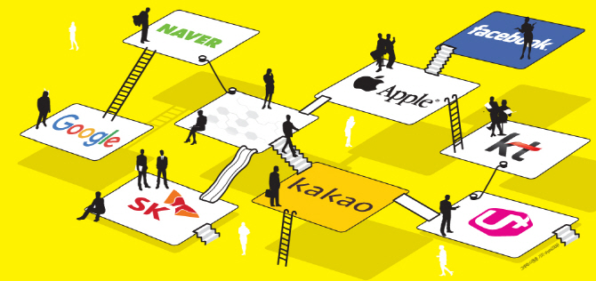

CJL Lab
About
Courses
All Courses
Data Science 101
Machine Learning 101
Media & Data Science
Culture & Technology
Data Journalism
Research
Publications
Work in progress
Proj
Blogs
On this page
Ongoing Projects
Completed Projects
Projects
Ongoing Projects
언론과 소셜 미디어 상의 건강보험공단 관련 이슈 분석
Funding
건강보험공단
Start
2023-04-01
Due
2023-12-31
State
Ongoing
가상세계 멀티 페르소나 성향과 사용자의 인지 강화
Funding
한국연구재단(2022S1A5A805107011)
Start
2022-05-01
Due
2023-04-30
State
Ongoing

플랫폼 산업의 경제 효용 추정: 자국 검색 플랫폼이 온라인 산업에 미치는 영향
Funding
한국연구재단(2020S1A5A2A0304148012)
Start
2020-07-01
Due
2023-06-30
State
Ongoing
No matching items
Completed Projects
탄소시장 대응 녹색기술 이전 및 기후변화 대응 기술사업모델을 통한 탄소시장 진출의 전략 대응도 및 전략 마련 : 특허분석을 기반으로
Funding
녹색기술센터
Start
2022-06-23
Due
2022-10-30
State
Completed
육군 인력획득 홍보 대상의 성향 분석 빅데이터 모형 연구
Funding
국방부 육군
Start
2022-02-01
Due
2022-07-31
State
Completed
건강 형평성 파악을 위한 안산시 건강지도 제작 연구
Funding
안산시지속가능발전협의회
Start
2021-06-01
Due
2021-12-22
State
Completed
미래 기술 정책을 위한 한국형 스마트 특성화 전략 모델 구축
Funding
한국연구재단(2020R1G1A101245313)
Start
2020-03-01
Due
2023-02-28
State
Completed
Technology Evolution in Regional Economies
Funding
ERC 715631, TechEvo
Start
2017-03-01
Due
2023-02-28
State
Completed
Working Hours and Familial Supports
Funding
NUS
Start
2015-09-01
Due
2017-08-31
State
Completed
No matching items